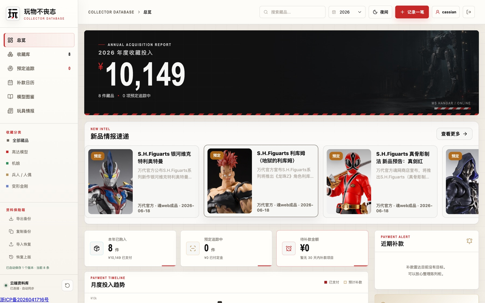
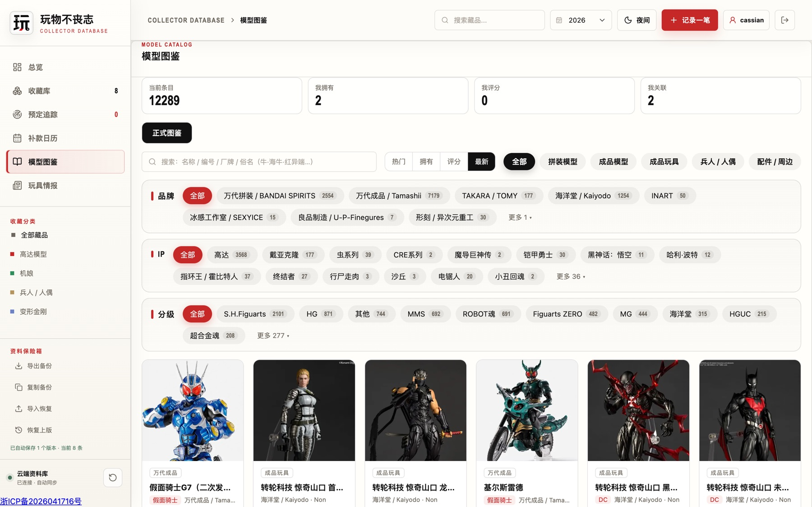
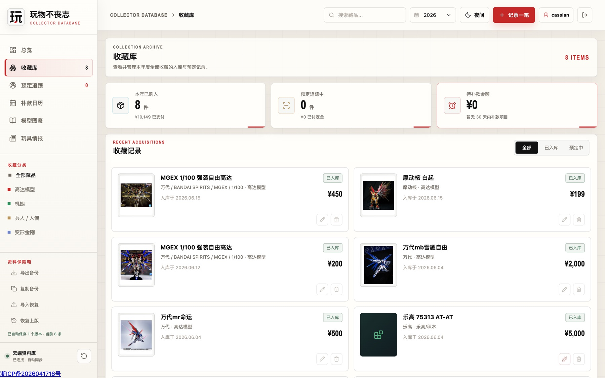
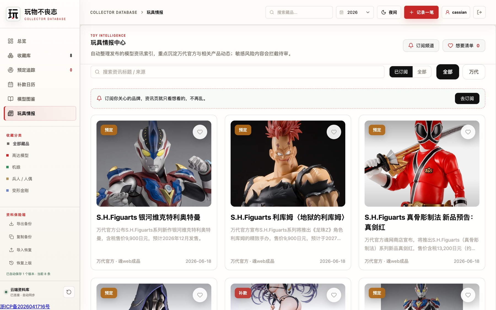
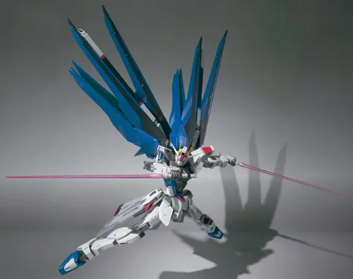
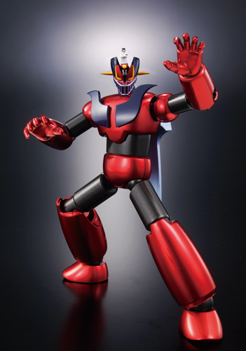
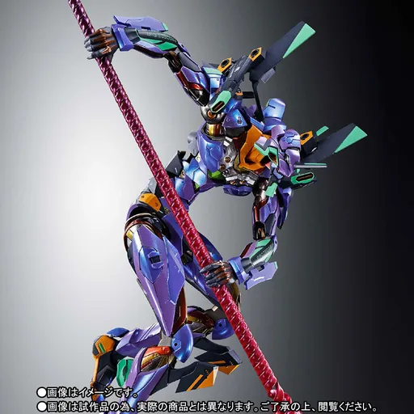

收藏记录
记录已入库、预定、补款和总价，支持按年份、分类、状态查看自己的收藏投入。
WHY IT EXISTS
很多玩家的收藏分散在相册、订单、聊天记录和各种官网页面里。玩物不丧志把这些信息整理成一套可查询、可维护、可同步的收藏数据库，让每一件藏品都有自己的来源、状态、价格、图鉴和资料。
INSIDE THE APP




总览看板 · 年度收藏投入与新品速递
CORE MODULES
记录已入库、预定、补款和总价，支持按年份、分类、状态查看自己的收藏投入。
沉淀官方资料、本土化名称、搜索俗名和分类体系，录入藏品时可以直接关联图鉴。
聚合新品、预定、出货和社媒动态，支持频道订阅，减少被无关资讯淹没的时间。
把说明书从链接变成可在线查看的资料入口，后续会继续补齐更多品类和页图。
面向真实搜索习惯优化：MB、MG、FIX、俗称、外号和本土叫法都逐步写入搜索词。
收藏数据写入云端，网页和小程序共用同一套接口，换设备也能继续管理。
MODEL CATALOG
图鉴会按照品牌、IP、分级/产品线分层，并持续补充本土化名称、俗称、发售时间、图片、说明书和关联商品。目标不是“堆数据”，而是让玩家用自己的叫法也能搜到正确的东西。
进入图鉴看板


CROSS DEVICE
适合批量整理图鉴、维护收藏、处理资讯和做数据管理。
适合移动端快速查图鉴、看资讯、记录新到货。微信搜索「玩物不丧志」即可进入。
DATA PIPELINE
继续校准名称、分类、俗称和搜索词，让玩家搜索习惯优先于机械翻译。
持续补充说明书、角色设定、商品详情和同系列关联，提升图鉴详情页价值。
优化小程序移动端录入、图片上传、登录注册和不同手机屏幕的排版适配。
START ARCHIVING